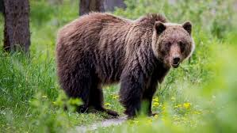
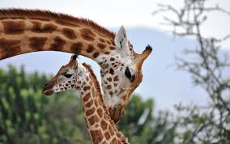
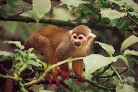
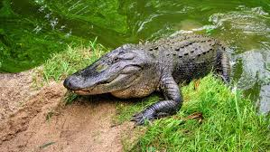

Animals
Bears
- Ollie
- Mona
A large, powerful mammal with thick fur, known for its strength and ability to adapt to a variety of habitats, from forests to mountains.
Giraffes
- Frankie
- Coconut
The tallest land animal, recognized for its long neck and legs, which allow it to reach leaves high up in trees on the African savanna.
Lions

- Mella
- Karl
A majestic big cat with a muscular build and a distinctive mane on males, often referred to as the "king of the jungle" and known for living in prides.
Monkeys
- Cookie
- Earl
- Banana Pudding
A highly social and agile primate with a long tail, known for its intelligence and playful behavior in both forests and savannas.
Alligators
- Wren
- Aspen
- Mika